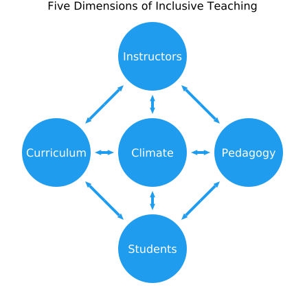
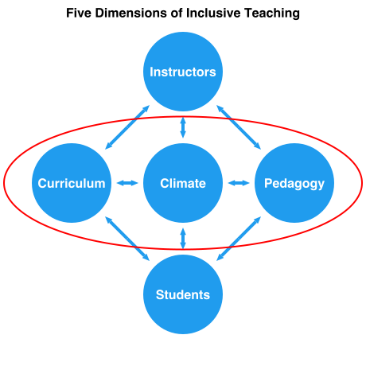
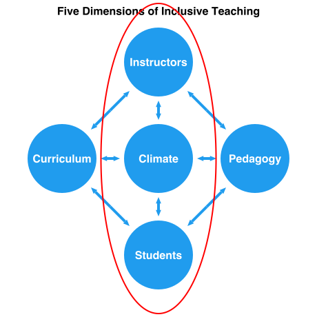
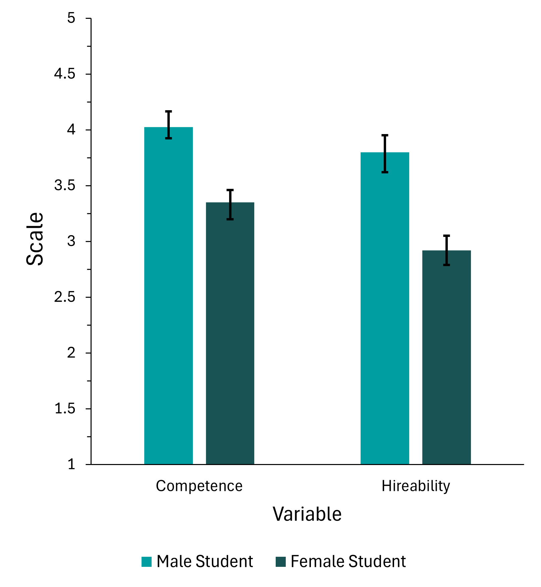
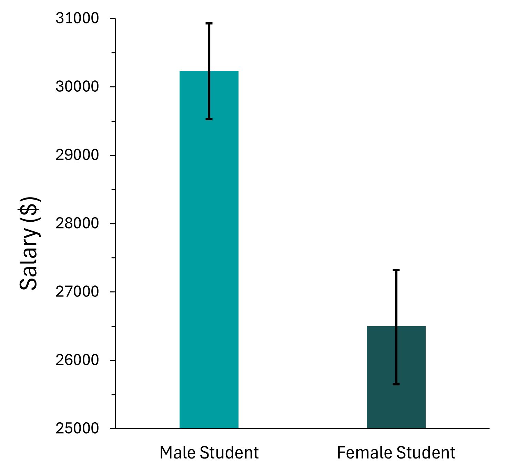

Inclusive Learning
Estimated time to complete: 35 minutes
Learning Objectives
By the end of this module, you will be able to...
- Define Inclusive Learning
- Justify why inclusive learning matters for increasing diversity in STEM.
- Explain how instructors, students, curriculum, and pedagogy can influence course climate.
- Apply the five dimensions of inclusive teaching to your course.
Inclusive Learning Defined
Inclusive learning refers to all the factors that contribute to a classroom environment where:
- Students feel a sense of belonging, value, and respect.
- They are provided with the necessary resources and opportunities to learn.
The curriculum, pedagogy, instructors, and students work together to create a course climate that includes and supports students in learning.
There is no shortage of inclusive teaching methods. In fact, the number of choices can be overwhelming. This module distills evidence-based practices that support an inclusive course climate and gives you the chance to evaluate them for your course. It also asks you to consider how your identities and actions influence who feels included or excluded in your course. The examples provided in this module are not comprehensive; many more can be found throughout this Scientific Teaching Course.
Why Inclusive Learning?
Diversity in STEM requires inclusive learning environments.
Recall from the previous module that a prevailing reason students leave science majors is not because they are incapable, but because STEM is often taught in a manner that fails to inspire students or create a sense of belonging. Consequently, more than half of the 600,000 US students who declare STEM majors change to a different major before graduating (Thiry et al., 2019), with students from underrepresented backgrounds switching out of STEM at disproportionate rates (Riegle-Crumb et al., 2019).
When students feel a sense of belonging in STEM, they are more likely to engage deeply, persevere through challenges, and envision themselves as future scientists, engineers, and innovators. And reversing STEM attrition requires us to reimagine how the various components of a classroom work together to create inclusive learning environments.
A Framework for Inclusive Learning
The Five Dimensions of Inclusive Teaching (Bell et al., 2016) provides a framework for understanding how instructors, students, curriculum, and pedagogy collectively influence our teaching, students’ learning, and the classroom environment.
At the center of the framework is course climate, which encompasses the atmosphere and environment in which students learn. It is influenced by the other four dimensions: instructors (who we are), students (who we teach), curriculum (what we teach), and pedagogy (how we teach).

Figure adapted from (Bell et al., 2016; Marchesani and Adams, 1992).
Reflection: Five Dimensions of Inclusive Teaching
Call to mind a course you are teaching, have taught, or are planning to teach.
What is your understanding of the term “climate dimension”?
Which dimension(s) may require more attention for you to consider?
The Climate Dimension
Course climate encompasses the intellectual, social, emotional, and physical environment in a class (Ambrose et al., 2010). It is shaped by a combination of instructor decisions, student interactions, and broader influences. As instructors, we play a key role in shaping this climate by designing and sustaining learning experiences to be welcoming and inclusive (Dewsbury and Brame, 2019; Bell et al., 2016). An inclusive course climate ensures that all students, regardless of background or identity, feel valued and supposed in their learning (Brame, 2019).
The Instructor Dimension
Even though we are scientists, we are human and therefore not objective. As instructors, our identities are influenced by our values, principles, families, scientific disciplines, privileges, struggles, and all the factors that we experience during our lives (Rus et al., 2013; Peterson et al., 1999). Those influences also give us biases that lead to assumptions.
In aggregate, our identities, biases, and assumptions affect the pedagogical choices we make regarding the content and examples we highlight, as well as the values and skills we expect our students to learn. As a result, the instructor shapes the course climate and therefore each student's learning experience.
The Student Dimension
Like instructors, students come to our courses with a composite of identities, biases, and interests. Students interact with their instructors, with each other, and with content in the context of a course’s climate. Students’ identities and their interactions influence the extent to which they feel a sense of belonging, which affects learning outcomes and persistence in STEM.
The Curriculum Dimension
Curriculum is arguably the most visible component of a course and has an important influence on the course climate. It encompasses what we teach, including the learning objectives we set, the content we prioritize, how we demonstrate relevance, and the examples we choose to include. In STEM, this includes establishing which facets of science (described in the previous module) are most relevant for a specific course and working to bring them to life. Creating an inclusive course curriculum also involves considering whose interests and voices are represented.
Science Content
Many studies demonstrate that active participation in science leads to an improved sense of belonging and retention in STEM (Estrada et al., 2011; Evans et al., 2021; Hanauer et al., 2017; Jordan et al., 2014; Lopatto et al., 2008; Olson et al., 2019; Shaffer et al., 2014; Waddell et al., 2021). This active participation requires that students engage with the six facets of science (described in the previous module). Our role as instructors is to establish which facets are most relevant for a specific course and work to bring them to life. The Scientific Teaching Course provides tools for this purpose in the following modules about course design and learning experiences.
Diverse Perspectives and Representations
Part of scientific identity includes seeing one’s self and perspectives represented positively through the research questions asked, the outcomes discovered, and the individuals represented as scientists. Instructors decide whose voices are represented—which are all powerful ways to influence belonging in STEM. Strategies can be relatively simple, such as recognizing scientists from a variety of identities and backgrounds (Schinske and Tanner, 2014), or complex, such as decolonizing the curriculum, which involves reimagining content and approaches that have historically prioritized Western, white, male-centric knowledge (Gichuru, 2024).
The Pedagogy Dimension
Pedagogy involves the teaching approaches that are used, including how students interact with the content and each other. Once again, the choices we make determine how inclusive the course feels. In the Scientific Teaching module, we demonstrated how poor instruction leads to a pattern of exclusion from STEM that differentially affects students. In contrast, pedagogies that promote a sense of belonging lead to increased persistence in STEM (Estrada et al., 2011), especially for HEC students (Evans et al., 2021; Hurtado et al., 2009; Olson et al., 2019; Rodenbusch et al., 2016; Shuster et al., 2019; Waddell et al., 2021).
Inclusive Learning in Practice
Let’s examine how the instructor, student, curriculum, and pedagogy dimensions work together to create a course climate that is welcoming and supportive of all students. Below is a summary of several evidence-based practices based on the five dimensions of inclusive teaching, many of which are expanded upon in subsequent modules.
Choose Evidence-based Interventions

Interventions can be incorporated as individual or repeated activities, such as:
- Increase instructor presence and connection to students by making eye contact, engaging in positive body movements such as nods and smiles, communicating goals, setting guidelines for student interactions, and encouraging student participation (Shea et al., 2006; Baker, 2010; Andersen et al., 1981; Arbaugh and Hwang, 2006).
- Use active learning experiences, in which students actively engage with content and sometimes each other (Freeman et al., 2014). You’ll find more examples in the Learning Experiences module.
- Do regular formative assessments, in which students have the opportunity to regularly practice and receive feedback (Black and Wiliam, 1998). You’ll find more examples in the Learning Experiences module.
- Encourage microaffirmations, which are actions that demonstrate care and can affirm a student's capabilities (Estrada et al., 2019)
- Leverage activities that increase resilience by reframing social adversity as common and transient (Walton and Cohen, 2011)
- Incorporate interventions that make explicit the utility value of a course or its parts (Harackiewicz et al., 2016; Asher et al., 2023).
- Take actions that mitigate stereotype threat, which occurs when individuals fear they may confirm negative stereotypes about their social group, which in turn can negatively impact their performance (Steele et al., 2002).
- Highlight scientists from a variety of identities and backgrounds (Schinske and Tanner, 2014), and present a range of research questions and discoveries so students can see themselves and things they care about reflected in the course.
Instructors can also modify overall course structure or infuse practices into an entire course to accomplish an inclusive learning environment. Some examples:
- Create a culture where failure is a productive and normal part of science, rather than a judgement on students' identity (Petroski, 2013; Simpson and Maltese, 2017; Lopatto et al., 2020; Gin et al., 2018; Good et al., 2012; Koch et al., 2008; Cacciotti and Hayton, 2015).
- Use high-structure course design to elucidate what is expected of students and create predictable patterns (Freeman et al., 2011; Theobald et al., 2020). You’ll find more on this in the Course Structure module.
- Engage students in the six facets of science (described in the previous module). Many studies demonstrate that active participation in science leads to an improved sense of belonging and retention in STEM (Estrada et al., 2011; Evans et al., 2021; Hanauer et al., 2017; Jordan et al., 2014; Lopatto et al., 2008; Olson et al., 2019; Shaffer et al., 2014; Waddell et al., 2021).
- Teach a course-based undergraduate research experience (CURE), in which students engage in research while enrolled in a course (Aikens et al., 2017; Dolan and Weaver, 2021; Hurtado et al., 2009).
- Leverage universal design for learning principles, which incorporate accessibility considerations into course design that provide equal access and opportunities for everyone, regardless of their abilities (Burgstahler, 2013).
- Design authentic assessments that engage students in tasks that reflect how science is done in the workforce and in real-world contexts (Wiggins, 1990; Schultz et al., 2022; Villarroel et al., 2018).
- Decolonize the curriculum, which involves reimagining content and approaches that have historically prioritized Western, white, male-centric knowledge (Gichuru, 2024).
Commit to Action: Inclusive Learning
Call to mind a course you are teaching, have taught, or are planning to teach.
Describe 2-3 new actions you could take to promote inclusive learning in your course.
Consider Identities

Identity comprises the social, emotional, and professional attributes of an individual (Rus et al., 2013; Peterson et al., 1999). It can be influenced by life experiences, positionality, and power. Identity affects how we choose to present ourselves, relate to others, and prioritize content, which in turn, influences the learning climate.
Social identity is defined as the sense of self that comes from membership in a social group and the value attached to membership within that group by society (Tajfel, 1979). It can change over time and between contexts (Gee, 2000). Moreover, each of us holds multiple social identities that intersect to shape our unique experiences, both in how we see ourselves and how others see us (Crenshaw, 2013; Gordon, 2008). Although social science research has historically highlighted discrimination against protected social groups, it is also important to recognize the full picture of what it means to "belong" in a group, such as its members' unique joys, values, experiences, and means for fighting back against their discrimination (Tuck, 2009). Otherwise, we risk portraying these groups only ever in terms of their "damage."
Emotional identity characterizes how a person responds to their own emotions and the emotions of others. It is informed by experiences, power dynamics, and agency.
Professional identity (in our case, teacher identity or STEM instructor identity) encompasses how individuals perceive themselves and construct their professional identities as teachers within educational settings (Yuan et al., 2019). An instructor’s professional identity is dynamic and influenced by experience and positionality (Sachs, 2005).
The Connection between Identity and Belonging
Students’ identities influence the extent to which they feel a sense of belonging. The Tripartite Integration Model of Social Influence (TIMSI) explains the psychological mechanisms underlying belonging in STEM (Estrada et al., 2011). The TIMSI describes three orientations that contribute to student persistence in STEM:
- Scientific self-efficacy: Students feel capable of performing the actions needed to be successful in science.
- Scientific identity: Students perceive science as part of who they are and feel a sense of belonging within a scientific community.
- Scientific values: Students authentically agree with the values of the scientific community, such as the importance of rigor and discourse in evaluating evidence.
Considering students' needs and backgrounds can help instructors to design learning experiences that build students' confidence in scientific skills, affirm their identities as scientists, and highlight the relevance/importance of scientific values.
Identity Attributes
Sort the following into social, emotional, and professional attributes of identity:
- ability
- age
- current state of mind
- educational background
- first-generation status
- gender
- mental health status
- neurodiversity
- overall health and well being
- positionality within an institution
- race/ethnicity
- sexual orientation
- skills and abilities
- socioeconomic status
- support network
- trauma history
- veteran status
- work experience
- work-related interests
Click here to show the answer
SOCIAL: race/ethnicity, gender, sexual orientation, socioeconomic status, age, ability, veteran status, neurodiversity
EMOTIONAL: trauma history, mental health status, current state of mind, support network, overall health and well being
PROFESSIONAL: educational background, first-generation status, work experience, work-related interests, skills and abilities, positionality within an institution
Reflection: Your Identity in Teaching Science
Your identity matters. Consider the identities that you bring to the learning environment and how they influence your perspectives and the learning environment.
Write down, on a separate piece of paper for privacy, your:
- Full name
- Race
- Ethnicity
- Birth country
- Gender identity
- Sexual orientation
- Veteran status
- Educational path
- Family socioeconomic status
- Health status (mental and physical)
- Family situation and/or relationship status
- Circle of friends
- Hobbies or interests
- Financial situation
Do you tell your students these attributes? Why or why not?
What is one way that those attributes could affect your teaching or your interactions with students?
Reflection: Your Students’ Identities
We considered our own identities, but it is also important to be aware of who is in our classes.
What do you know about your students’ identities and what is important to them?
How do their identities and background impact how they experience interactions or activities in class with you and with their peers?
How do their identities shape how they decide what is relevant or important?
Mitigate Biases and Assumptions
Identities aren’t the only thing that influence outcomes in STEM. Biases and assumptions matter, too. For example, biases and assumptions affect how we rate people, which can have consequences for hiring decisions and advancement.
Let’s examine hiring studies as one example of bias affecting outcomes. In one study (Moss-Racusin et al., 2012) 127 biology, chemistry, and physics faculty at six top US research universities received a student resume for a lab manager position. Each resume was randomly assigned a gendered name: “Jennifer” (female) or “John” (male). Otherwise, the applications were identical, and each evaluator saw only one version. Faculty then evaluated the student’s competence and hireability and proposed a salary.
What results would you predict? Click here to find out what happened!


Dozens of studies have compared hiring decisions with the same setup, all yielding the same result: Evaluators are substantially more likely to hire and pay a higher salary if an applicant has a man’s name. These results have not changed for 50 years.
In fact, we hold biases about everything imaginable—not just hiring. For a more complete list of the HEC groups affected by bias and assumptions in STEM higher education, check out the supplementary materials for Achieving STEM Diversity: Fix the Classrooms (Handelsman et al., 2022). An example in a classroom context could look like instructors calling on students they expect will have the right answer or whose name they can pronounce.
Bias is not inherently bad and is part of human nature. But when bias leads to recurring, systemic inequalities that cause negative socioeconomic impacts and structural inequities, we need to pay attention and effect change.
Reflection: Bias in STEM
What biases have you seen or experienced in STEM or STEM higher education?
Some examples of strategies that consider the instructor and student dimensions include:
- Learn about your students interests, goals and needs through short surveys and polls throughout the semester (Tanner, 2011; Tanner 2013).
- Create a culture where failure is a productive and normal part of science, rather than a judgement on students' identity (Petroski, 2013; Simpson and Maltese, 2017; Lopatto et al., 2020; Gin et al., 2018; Good et al., 2012; Koch et al., 2008; Cacciotti and Hayton, 2015).
- Incorporate interventions that make explicit the utility value of a course or its parts, such as asking students to reflect on how course topics are relevant to their own goals, values and interests. Research has found that such interventions can increase persistence in STEM, especially for students from marginalized groups (Asher et al., 2023, Harackiewicz et al.,2016).
- Take actions that mitigate stereotype threat, which occurs when individuals fear they may confirm negative stereotypes about their social group, which in turn can negatively impact their performance (Steele et al., 2002). For instance, communicate that you believe all students can be successful as you share constructive feedback (Killpack and Melon, 2016).
- Build your self-awareness of what you bring to the classroom in terms of your identities, educational experiences, and biases, and consider how this impacts your interactions with students (Dewsbury, 2020).
- Use strategies to mitigate biases such as grading anonymously, using rubrics, and structuring participation to hear from a range of students rather than those who readily share ideas (Killpack and Melon, 2016; Tanner 2013).
Summary of Inclusive Learning
- The instructor, students, curriculum, and pedagogy influence each other and collectively affect the course climate.
- Instructors can leverage these dimensions to create inclusive learning environments.
- Inclusive learning environments lead to persistence and diversity in STEM.
Takeaways from Inclusive Learning
Identify two key takeaways that resonate most with you after completing this module.